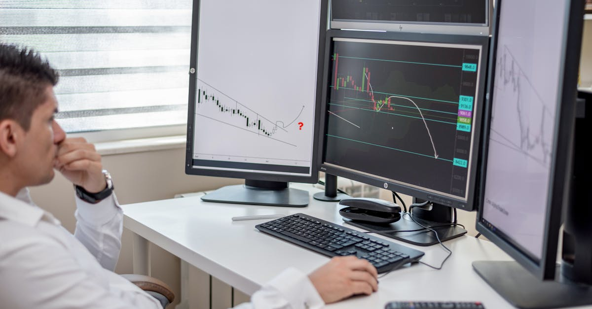

L'Émission "Insight with Haslinda Amin" et les Marchés de 2026
L'actualité financière est un flux incessant d'informations, de déclarations et d'analyses qui, pour un observateur non averti, peut sembler chaotique. Cependant, pour les professionnels des marchés, chaque mot prononcé par une figure influente, chaque donnée économique publiée, représente un signal potentiellement décisif. C'est dans ce contexte que des émissions comme "Insight with Haslinda Amin" de Bloomberg Markets prennent toute leur importance. Diffusée quotidiennement, cette émission est réputée pour ses interviews approfondies avec des leaders éminents du monde des affaires, de la finance, de la politique et de la culture, offrant une perspective complète sur les événements qui façonnent notre économie mondiale.
👉 À lire : IA et Forex : Naviguer les tensions géopolitiques
En avril 2026, la pertinence de telles analyses n'a fait que s'accentuer. Le paysage financier global est devenu d'une complexité sans précédent, marqué par des dynamiques économiques divergentes, des tensions géopolitiques persistantes et une accélération fulgurante de l'innovation technologique. Les décisions des banques centrales, les politiques commerciales des grandes puissances, les avancées en matière d'intelligence artificielle et l'évolution des marchés de l'énergie et des matières premières sont autant de facteurs qui interagissent de manière complexe, rendant la prédiction des mouvements de marché particulièrement ardue. Les investisseurs, qu'ils soient institutionnels ou particuliers, sont constamment à la recherche d'avantages informationnels pour optimiser leurs stratégies. Les insights offerts par des personnalités interviewées par Haslinda Amin peuvent fournir des clés de lecture essentielles, mais leur interprétation et leur intégration dans une stratégie de trading requièrent une agilité et une capacité d'analyse que seuls les systèmes les plus sophistiqués peuvent désormais offrir.
👉 À lire : Trêve Israël-Liban : Opportunités pour le Trading Forex IA
Le marché des changes, ou Forex, est par nature le reflet le plus direct de ces interactions mondiales. Les paires de devises réagissent instantanément aux annonces économiques, aux changements de sentiment politique et aux flux de capitaux internationaux. Comprendre les implications des discussions de haut niveau diffusées sur Bloomberg, par exemple, sur la direction du dollar américain, de l'euro, du yen ou de toute autre devise majeure, est fondamental. C'est là que la synergie entre l'expertise humaine et la puissance de calcul de l'intelligence artificielle devient indispensable. Alors que les analystes humains peuvent saisir les nuances et le contexte des déclarations, les algorithmes d'IA sont capables de traiter des volumes massifs de données textuelles et numériques, d'identifier des corrélations subtiles et d'exécuter des transactions à une vitesse et une précision inaccessibles à l'homme. La capacité à transformer des insights qualitatifs en actions de trading quantitatives est devenue la pierre angulaire du succès dans le trading de devises en 2026.

Les Grands Thèmes Économiques et Géopolitiques de 2026 : Un Labyrinthe pour le Forex
L'année 2026 se caractérise par une confluence de forces économiques et géopolitiques qui ont redessiné la carte des risques et des opportunités pour le marché des changes. Les discussions au sein d'émissions telles qu'"Insight with Haslinda Amin" mettent en lumière ces dynamiques complexes. Sur le plan économique, la lutte contre l'inflation, bien que potentiellement atténuée dans certaines régions, reste une préoccupation majeure. Les banques centrales sont confrontées au dilemme de maintenir la stabilité des prix sans étouffer la croissance, ce qui entraîne des politiques monétaires divergentes. Cette divergence est un moteur essentiel de la volatilité des paires de devises. Par exemple, une Réserve Fédérale américaine plus hawkish face à une Banque Centrale Européenne plus accommodante pourrait renforcer le dollar face à l'euro, créant des opportunités de trading significatives.
Parallèlement, la croissance économique mondiale en 2026 n'est pas uniforme. Alors que certaines économies émergentes montrent des signes de résilience et de dynamisme, d'autres régions développées pourraient faire face à des pressions déflationnistes ou à une stagnation. Ces asymétries de croissance influencent les flux de capitaux et, par conséquent, la demande et l'offre de devises. Les interviews de Bloomberg avec des ministres des Finances ou des dirigeants d'institutions internationales sont cruciales pour évaluer ces perspectives. Un discours soulignant la robustesse d'une économie par rapport à une autre peut instantanément modifier les attentes du marché et provoquer des mouvements de devises. L'analyse de ces discours par des systèmes d'IA permet de capter ces nuances et de réagir bien plus rapidement que les traders humains, qui pourraient passer à côté de signaux faibles mais importants.
Sur le front géopolitique, 2026 est une année où les tensions commerciales et les conflits régionaux continuent de peser sur la confiance des investisseurs et d'introduire des éléments d'incertitude. Les relations entre les grandes puissances, les défis liés à la sécurité énergétique et les nouvelles alliances stratégiques créent des ondes de choc qui se propagent à travers les marchés financiers, y compris le Forex. Par exemple, une escalade des tensions dans une région productrice de pétrole peut faire grimper les prix de l'énergie, impactant les balances commerciales des pays importateurs et exportateurs, et par ricochet, la valeur de leurs monnaies. Les programmes d'analyse approfondie offrent une plateforme pour que ces enjeux soient discutés par des experts. L'intelligence artificielle, grâce à ses capacités de traitement du langage naturel (NLP), peut scanner et analyser des milliers d'articles de presse, de déclarations officielles et de transcriptions d'émissions comme celle d'Haslinda Amin, pour déceler les tendances géopolitiques émergentes et leur impact potentiel sur les paires de devises, bien avant que ces informations ne soient pleinement intégrées dans les cours de marché. Cette approche systématique permet de transformer un "labyrinthe" d'informations en une carte d'opportunités de trading.
L'Impact des Politiques Monétaires et Fiscales sur le Forex en 2026
Les politiques monétaires et fiscales sont, et resteront en 2026, les leviers les plus puissants des gouvernements et des banques centrales pour influencer l'économie et, par extension, les marchés des changes. Les interviews de banquiers centraux et de ministres des finances sur des plateformes comme "Insight with Haslinda Amin" sont des moments clés où les marchés retiennent leur souffle, à l'affût de la moindre indication sur l'orientation future des taux d'intérêt, des programmes d'assouplissement quantitatif ou des plans de relance budgétaire. En 2026, la divergence des politiques monétaires est un thème dominant. Alors que la Réserve Fédérale pourrait se montrer prudente face à une inflation résiduelle, la Banque Centrale Européenne pourrait être confrontée à des pressions différentes, liées à la croissance ou à la fragmentation de la zone euro. Ces écarts de politique créent des différentiels de taux d'intérêt qui rendent certaines devises plus attractives pour les investisseurs en quête de rendement, entraînant des flux de capitaux massifs et des mouvements significatifs sur le Forex.
La crédibilité et la communication des banques centrales sont également des facteurs essentiels. Un discours clair et cohérent de la part du président de la Fed ou de la BCE, par exemple, peut stabiliser les marchés, tandis qu'une communication ambigüe peut générer de la volatilité. Les algorithmes d'IA sont particulièrement performants pour analyser le "ton" de ces discours, en identifiant les mots-clés, les phrases-clés et même les nuances sémantiques qui signalent un changement potentiel d'orientation politique. Cette analyse de sentiment, combinée à l'étude des données macroéconomiques, permet aux systèmes automatisés de réagir instantanément aux annonces, bien avant que les traders humains n'aient le temps de digérer l'information. Cette rapidité est un avantage décisif sur le marché du Forex, où chaque milliseconde compte.
Du côté fiscal, les niveaux d'endettement public, les plans d'investissement dans les infrastructures vertes ou la défense, et les réformes fiscales nationales sont autant d'éléments qui affectent la santé économique d'un pays et, par conséquent, la perception de sa monnaie. Un pays avec une trajectoire de dette insoutenable ou un déficit budgétaire croissant peut voir sa monnaie se déprécier, tandis qu'un pays menant des réformes structurelles audacieuses peut attirer les investisseurs. Les discussions sur ces sujets lors d'émissions de finance de haut niveau sont des indicateurs précieux. L'intégration de ces informations qualitatives dans des modèles quantitatifs d'IA permet de créer une vue d'ensemble holistique. Les agents IA sont capables de corréler ces développements politiques avec les données historiques des devises et d'anticiper les réactions du marché, offrant ainsi une capacité d'adaptation et d'optimisation des stratégies de trading que l'analyse humaine seule ne saurait égaler dans le contexte complexe des politiques monétaires et fiscales de 2026.

La Révolution Technologique et l'IA dans la Finance : Un Pilier du Trading de 2026
L'année 2026 marque une étape décisive dans l'intégration de la technologie, et plus particulièrement de l'intelligence artificielle, au cœur de la finance mondiale. Ce n'est plus une simple tendance, mais une révolution structurelle qui redéfinit la manière dont les marchés sont analysés, les risques gérés et les transactions exécutées. Les discussions au sein d'émissions d'experts comme "Insight with Haslinda Amin" ne manquent pas d'aborder la portée de cette transformation, notamment l'impact de l'IA sur la productivité, la création de nouvelles industries et, bien sûr, le secteur financier. La quantité et la vélocité des données disponibles aujourd'hui dépassent de loin la capacité d'analyse humaine. Des milliards de points de données – allant des rapports économiques aux articles de presse, en passant par les posts sur les réseaux sociaux et les flux de trading – sont générés chaque seconde. Tenter de déchiffrer manuellement ces informations pour en extraire des signaux de trading pertinents est tout simplement irréalisable.
C'est précisément là que l'intelligence artificielle, et plus spécifiquement les agents IA dédiés au trading, démontrent leur valeur inégalée. Ces systèmes sont conçus pour traiter et interpréter des volumes de données colossaux à une vitesse fulgurante. Ils utilisent des algorithmes sophistiqués de machine learning pour identifier des motifs, détecter des anomalies et prédire des mouvements de marché avec une précision accrue. Pour le marché Forex, où les fluctuations peuvent être rapides et imprévisibles, cette capacité est un avantage concurrentiel majeur. Imaginez un agent IA capable d'analyser en temps réel les transcriptions des interviews de Bloomberg, d'identifier les mots-clés qui signalent un changement de politique monétaire ou une nouvelle perspective économique, et de corréler instantanément ces informations avec les données de prix historiques et les indicateurs techniques pour générer un signal de trading. Cette intégration de l'analyse fondamentale (qualitative) et technique (quantitative) est ce qui rend l'IA si puissante.
Au-delà de l'analyse, l'IA excelle également dans l'exécution. Une fois qu'un signal de trading est généré, l'agent IA peut exécuter la transaction en une fraction de seconde, minimisant ainsi le slippage et maximisant le potentiel de profit. De plus, ces systèmes sont capables d'apprendre et de s'adapter en continu. Ils ajustent leurs stratégies en fonction des nouvelles données et des performances passées, devenant ainsi de plus en plus efficaces au fil du temps. En 2026, l'IA n'est plus un outil expérimental, mais un pilier central pour toute stratégie de trading sérieuse, offrant une capacité à opérer 24 heures sur 24, 7 jours sur 7, sans émotion ni fatigue. Elle permet aux traders de capitaliser sur les insights les plus pointus, même ceux issus des discussions de haut niveau comme celles d'Haslinda Amin, en les transformant en actions concrètes et profitables sur le marché du Forex, optimisant ainsi la performance et la gestion des risques dans un environnement financier de plus en plus complexe.
Les Marchés Émergents et les Nouvelles Opportunités de Diversification en 2026
En 2026, les marchés émergents continuent de jouer un rôle de plus en plus prépondérant dans l'économie mondiale, offrant des opportunités de diversification cruciales pour les investisseurs. Les discussions au sein de programmes d'analyse comme "Insight with Haslinda Amin" mettent souvent en lumière les dynamiques uniques de ces économies, qui peuvent être à la fois des moteurs de croissance et des sources de volatilité. Alors que les économies développées pourraient faire face à des défis structurels tels que le vieillissement de la population et des taux de croissance plus faibles, de nombreux marchés émergents bénéficient d'une démographie jeune, d'une urbanisation rapide et d'une classe moyenne en expansion, alimentant une demande intérieure robuste.
Les flux de capitaux vers les marchés émergents sont un moteur majeur des mouvements de devises. Les investisseurs sont attirés par les rendements potentiellement plus élevés offerts par ces économies, en particulier lorsque les taux d'intérêt dans les pays développés restent bas. Cependant, ces marchés sont également exposés à des risques spécifiques, tels que l'instabilité politique, la dépendance aux matières premières, les déficits courants et la volatilité des politiques monétaires locales. Un changement inattendu dans la politique d'une banque centrale émergente, ou une élection politique majeure, peut entraîner des dépréciations ou des appréciations rapides de la monnaie locale. Les experts interviewés sur Bloomberg peuvent fournir des analyses précieuses sur ces risques et opportunités, aidant à discerner les régions les plus prometteuses ou celles à éviter.
L'intelligence artificielle est un atout inestimable pour naviguer dans la complexité des marchés émergents. La capacité des agents IA à traiter des données provenant de sources diverses – des indicateurs économiques locaux aux rapports géopolitiques, en passant par l'analyse de sentiment des médias locaux – leur permet de construire une image plus complète et plus nuancée de la santé économique et politique de ces pays. Par exemple, un agent IA peut surveiller les données sur les exportations de matières premières d'un pays africain, les comparer aux cours mondiaux, et corréler ces informations avec les déclarations de ses dirigeants sur Bloomberg pour prédire les mouvements de sa devise. De plus, la diversification géographique est une stratégie clé pour atténuer les risques. En investissant dans un panier de devises de marchés émergents, les traders peuvent potentiellement bénéficier de la croissance de plusieurs régions tout en diluant l'impact des chocs spécifiques à un seul pays.
Les agents IA peuvent optimiser ces portefeuilles de devises en identifiant les corrélations changeantes entre les différentes monnaies et en ajustant dynamiquement les allocations pour maximiser les rendements ajustés au risque. Cette approche systématique et axée sur les données est essentielle pour exploiter les opportunités offertes par les marchés émergents en 2026, transformant ce qui pourrait être perçu comme un terrain miné en un champ d'opportunités lucratives pour le trading de devises automatisé.

Défis et Risques : Cybersécurité, Régulation et Volatilité Accrue en 2026
Bien que les opportunités abondent sur les marchés financiers de 2026, ils sont également parsemés de défis et de risques qui exigent une vigilance constante et des stratégies d'atténuation robustes. Les discussions sur "Insight with Haslinda Amin" mettent régulièrement en lumière ces dangers, qu'il s'agisse de menaces systémiques ou de risques plus spécifiques liés à l'innovation. L'un des risques les plus pressants est celui de la cybersécurité. Avec la dépendance croissante aux systèmes numériques et à l'intelligence artificielle, les infrastructures financières sont devenues des cibles privilégiées pour les cyberattaques. Une brèche de sécurité majeure pourrait non seulement compromettre des données sensibles, mais aussi perturber les opérations de marché, entraînant une panique et une volatilité extrêmes sur le Forex. La protection des systèmes de trading automatisés et des données des clients est donc une priorité absolue pour les acteurs du marché.
La régulation est un autre domaine en constante évolution qui présente à la fois des défis et des opportunités. En 2026, les régulateurs du monde entier s'efforcent de rattraper le rythme rapide de l'innovation financière, notamment en ce qui concerne les actifs numériques et l'utilisation de l'IA dans le trading. L'incertitude réglementaire peut créer de la volatilité et des obstacles pour les entreprises. Par exemple, des changements inattendus dans la classification des crypto-actifs ou des restrictions sur l'utilisation de certains algorithmes de trading pourraient avoir un impact significatif sur les stratégies d'investissement. Les interviews d'experts juridiques ou de régulateurs sur des plateformes comme Bloomberg sont cruciales pour anticiper ces évolutions et s'y conformer. Pour les systèmes d'IA, la capacité à s'adapter rapidement aux nouvelles exigences réglementaires est essentielle, nécessitant des mises à jour logicielles et une surveillance continue des cadres légaux.
Enfin, la volatilité des marchés reste un défi omniprésent. Les chocs géopolitiques imprévus, les crises économiques régionales, les catastrophes naturelles ou même les commentaires inattendus de leaders mondiaux peuvent déclencher des mouvements de prix abrupts et des retournements de tendance rapides sur le marché des devises. Cette volatilité, bien qu'offrant des opportunités de trading, augmente également les risques de pertes. Les systèmes d'IA avancés sont conçus pour gérer cette volatilité en intégrant des mécanismes sophistiqués de gestion des risques. Ils peuvent analyser des milliers de scénarios potentiels, ajuster dynamiquement la taille des positions, et mettre en œuvre des ordres stop-loss et take-profit avec une précision chirurgicale pour protéger le capital. La capacité de ces agents à fonctionner sans émotion est un avantage clé, car ils ne sont pas sujets à la panique ou à l'avidité qui peuvent souvent conduire à des décisions irrationnelles dans des marchés turbulents. En 2026, l'intégration d'une IA robuste est non seulement un atout pour la performance, mais aussi une nécessité pour la survie et la sécurité dans un environnement financier de plus en plus risqué.
Anticiper et Agir : Le Rôle Crucial de l'IA dans un Monde en Mutation
En 2026, le monde financier est un écosystème en perpétuelle mutation, où les insights de haut niveau, comme ceux offerts par "Insight with Haslinda Amin", sont plus précieux que jamais. Cependant, la valeur de ces informations ne réside pas seulement dans leur acquisition, mais surtout dans leur capacité à être interprétées, analysées et traduites en actions concrètes et rentables sur les marchés. Les thèmes abordés – de la divergence des politiques monétaires aux tensions géopolitiques, en passant par les dynamiques des marchés émergents et les risques de cybersécurité – soulignent une complexité qui dépasse désormais les capacités d'analyse humaine la plus sophistiquée, du moins en termes de vitesse et de volume.
C'est précisément dans ce contexte que l'intelligence artificielle s'impose non pas comme une option, mais comme une nécessité stratégique pour tout acteur sérieux du marché du Forex. Un agent IA est capable de surveiller en continu des milliers de sources d'information, d'écouter les nuances des discours des leaders mondiaux, de corréler ces données avec des indicateurs économiques et techniques, et de générer des signaux de trading en temps réel. Cette capacité à transformer des informations qualitatives, souvent subtiles, en stratégies quantifiables et exécutables, est la pierre angulaire de l'avantage concurrentiel en 2026. L'IA ne se contente pas d'automatiser des tâches ; elle augmente l'intelligence, la réactivité et la résilience des stratégies de trading face à l'imprévisibilité des marchés.
L'efficacité d'un agent IA réside également dans sa capacité à opérer 24 heures sur 24, 7 jours sur 7. Le marché du Forex ne dort jamais, et les opportunités peuvent surgir à tout moment, indépendamment des fuseaux horaires ou des heures de bureau. Un système automatisé par IA est toujours en alerte, prêt à capitaliser sur les mouvements de marché, qu'ils soient déclenchés par une annonce économique asiatique au milieu de la nuit européenne, ou par une déclaration politique américaine aux premières heures du matin. Cette omniprésence garantit qu'aucune opportunité n'est manquée et que les risques sont gérés de manière proactive, quelle que soit l'heure. De plus, l'absence d'émotion dans la prise de décision est un atout inestimable. Là où un trader humain pourrait être influencé par la peur ou la cupidité, l'IA s'en tient à une logique purement basée sur les données et les algorithmes, assurant une discipline de trading rigoureuse.
En conclusion, les insights offerts par des émissions telles que "Insight with Haslinda Amin" sont des phares dans la tempête des marchés mondiaux de 2026. Mais pour naviguer efficacement cette tempête et transformer ces lumières en profits, un navire équipé de l'intelligence artificielle est devenu indispensable. L'IA n'est pas seulement un outil pour le trading ; elle est le partenaire stratégique qui permet aux investisseurs de déchiffrer la complexité, d'anticiper les mouvements et d'agir avec une précision et une rapidité inégalées, assurant ainsi une performance optimisée et une gestion des risques supérieure dans un environnement financier en constante évolution.
Conclusion : L'IA, Compagnon Indispensable pour le Trader de 2026
L'analyse approfondie des dynamiques de marché, telle que proposée par des émissions de référence comme "Insight with Haslinda Amin" de Bloomberg, révèle un paysage financier en 2026 d'une complexité et d'une interconnexion sans précédent. Des politiques monétaires divergentes aux tensions géopolitiques persistantes, en passant par l'émergence de nouvelles puissances économiques et les risques inhérents à la cybersécurité, chaque facteur interagit pour créer un environnement de trading où l'information est reine, mais sa transformation en action profitable est un art que seule la technologie de pointe peut désormais maîtriser avec constance.
Nous avons exploré comment les discours des leaders mondiaux, les rapports économiques et les analyses d'experts peuvent influencer directement les paires de devises, créant des opportunités ou des risques significatifs. La rapidité avec laquelle ces informations sont digérées et traitées devient un avantage concurrentiel majeur. C'est ici que l'intelligence artificielle transcende son rôle d'outil pour devenir un véritable partenaire stratégique pour le trader moderne. Les agents IA sont capables de scruter, d'analyser et d'interpréter des volumes massifs de données textuelles et numériques, y compris les nuances subtiles des interviews de Bloomberg, à une échelle et une vitesse inaccessibles à l'être humain. Ils transforment ces insights qualitatifs en signaux de trading quantifiables, permettant une prise de décision rapide et éclairée.
L'intégration de l'IA dans le trading de devises en 2026 n'est plus une simple innovation, mais une condition sine qua non pour l'optimisation des performances et la gestion des risques. La capacité d'un agent IA à opérer 24h/24, sans émotion ni fatigue, garantit une surveillance constante des marchés mondiaux et une réactivité immédiate aux événements imprévus. Que ce soit pour capitaliser sur une divergence de taux d'intérêt, anticiper l'impact d'une nouvelle réglementation ou se protéger contre une volatilité soudaine, l'IA offre une précision et une discipline de trading inégalées. Elle permet de naviguer dans les eaux parfois tumultueuses du marché Forex avec une confiance accrue, transformant la complexité en opportunités.
En définitive, l'avenir du trading de devises en 2026 est indissociable de l'intelligence artificielle. Les traders qui sauront tirer parti de ces technologies avancées, en complément de leur propre expertise et des insights de qualité offerts par des sources comme Bloomberg, seront les mieux positionnés pour prospérer dans cet environnement en constante évolution. L'IA n'est pas là pour remplacer l'intelligence humaine, mais pour l'augmenter, offrant une capacité d'analyse, d'exécution et d'adaptation qui redéfinit les frontières de ce qui est possible sur les marchés financiers mondiaux.